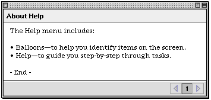
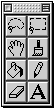

Utility Windows
Utility windows have been updated for platinum appearance. Figure 5-4 shows an example of a utility window. Note the crosshatch pattern which is used to fill the drag region, which in this case only extends across the top of the window. You can include a close box, collapse box, and a zoom box on utility windows.
If you create utility windows that have title bars and a title, make sure the title bar is at least 19 pixels high, the height of a document window title bar. (If you create a smaller title bar with a title, it can't be localized for areas where the system font is never smaller than 12 points.)
A tool palette is a utility window composed of closely-spaced bevel buttons. If you use 22-by-22-pixel buttons with a small bevel, 16-by-16-pixel icons will fit properly in the content region. Figure 5-5 shows a palette with 22-by-22-pixel buttons.
Figure 5-5 Tool palette with bevel buttons

For more information on bevel buttons, see "Bevel Buttons" (page 25).